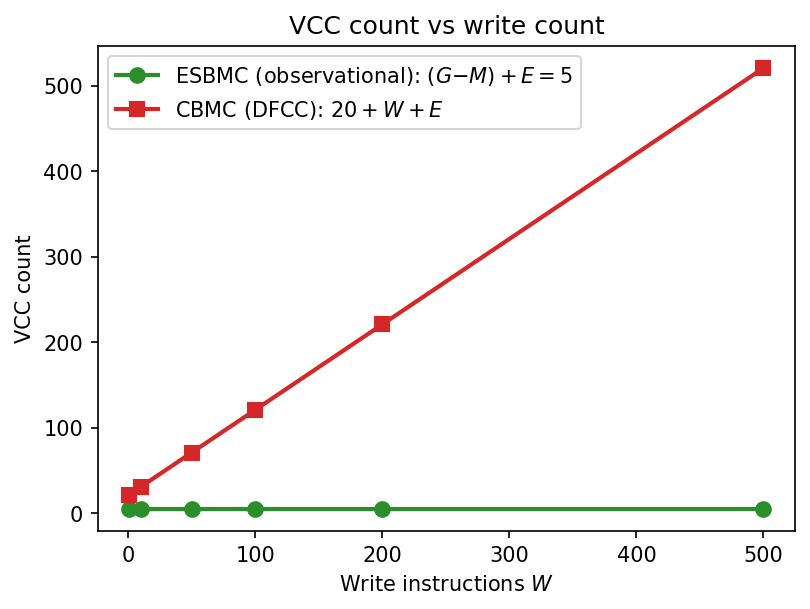
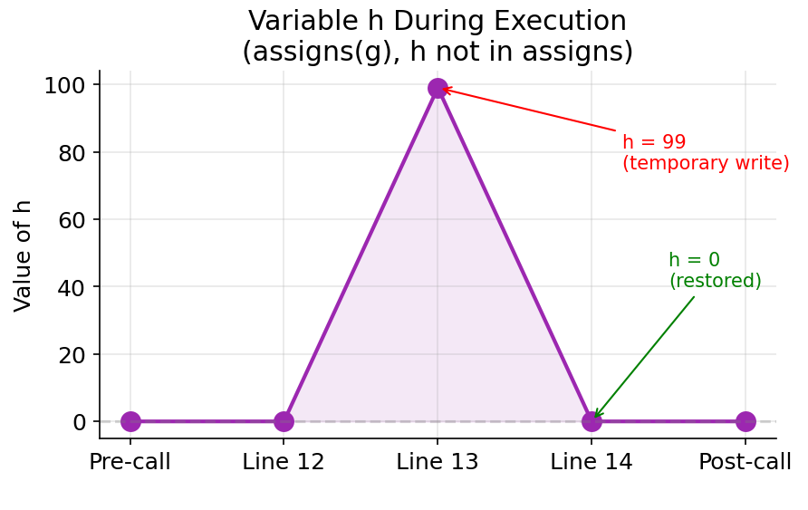

Machine-checks the algebraic soundness skeleton of the Enforce/Replace contract pipeline and observational frame rule in Lean 4 over an abstract state-transformer model.
Abstract
Bounded model checking unrolls a program into a single formula, so a function holding a loop costs the solver a fresh copy of that loop at every call site. Function contracts break that coupling. Verify the body once against its contract, then replace each call by a stub derived from it. CBMC supports this through dynamic frame condition checking, applied at industrial scale, but with no formal account of why the replacement is sound and no characterisation of what the frame check costs. We present the function-contract framework for ESBMC. The clause syntax, both phases, and the first assigns enforcement the tool has had are all introduced here. Its technical core is an observational frame rule: snapshot the locations the contract does not permit the function to write, then compare them at exit. The encoding emits a number of verification conditions set by how many globals the program has, not by how many writes the body performs, while dynamic frame condition checking grows with the write count. That is a property of the encoding rather than a timing, so it moves with neither the machine nor the solver. The rule itself is the classical one; what we add is its bounded form inside a BMC encoding, with the pipeline's algebraic skeleton machine-checked in Lean 4 and the limits of that model stated. We evaluate on synthetic sweeps, SV-COMP tasks, an ANSSI X.509 parser, the FreeRTOS heap_1 allocator, and the ML-KEM reference implementation whose CBMC contracts we reuse unchanged. At the coefficient count FIPS-203 mandates, neither tool finishes on the monolithic route inside ten minutes, and both finish on the modular one. The framework is merged into ESBMC master. Contracts are what is left when unrolling runs out of room.
Problem
Bounded model checking of C programs scales as O(N×K) when a looping function is called K times. Function contracts address this, but CBMC's dynamic frame condition checking has no formal soundness account, and its cost grows with the number of writes. ESBMC had no contract support.
Approach
The authors build a full function-contract framework for ESBMC with Enforce and Replace phases. Assigns clauses are enforced by an observational frame rule: snapshot the non-assigned globals at entry and compare them at exit. The algebraic skeleton of the pipeline is machine-checked in Lean 4. This covers enforce soundness, call-site abstraction, havoc soundness, Hoare frame embedding, contract substitution and a pointer extension, with no sorry or axioms. The Lean proofs cover the algorithm, not the ESBMC C++ code.
Results
The encoding emits (G−M)+E verification conditions, independent of the write count, versus 20+W+E for CBMC's DFCC. That gives up to a 6.2× speedup at W=500 and a 23× speedup for modular over direct verification at N=K=10. The framework handles X.509, FreeRTOS heap_1 and ML-KEM, where at N=256 only the modular route finishes in both tools. It is merged into ESBMC master.

Figure 9. Left: VCC counts vs. W ( G=5 , M=1 , E=1 ). ESBMC is constant at (G{-}M)+E=5 , while CBMC grows linearly as 20+W+E . Right: large-scale timing ( W up to 500); the dashed line (right axis) gives the CBMC/ESBMC speedup ratio, reaching 6.2{\times} at W=500 .

Figure 11. Semantic boundary (Exp 3), the temporary-write pattern. The non-assigned global h spikes to 99 mid-execution and is restored to 0 before exit. ESBMC’s observational rule reports pass ( h_{\mathit{post}}=h_{\mathit{pre}} ); CBMC/DFCC reports fail , as the intermediate write to h is intercepted.
Approach
VCCs
Scales with
Indep. of
ESBMC (Observational)
(G-M)+E
G (globals)
W (writes)
CBMC (DFCC)
20+W+E
W (writes)
G (globals)
VCC complexity (G globals, M assigns targets, W writes, E ensures clauses)